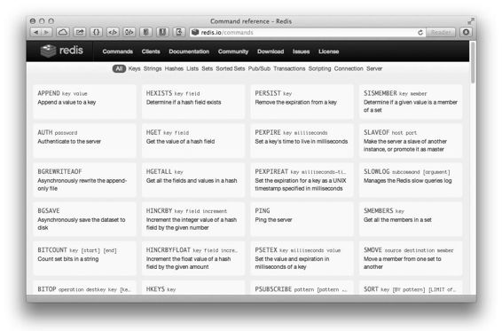

1.2 特性
作为一款个人开发的系统，Redis究竟有什么魅力吸引了如此多的用户呢？
有过脚本语言编程经验的读者对字典（或称映射、关联数组）数据结构一定很熟悉，如代码 dict["key"] = "value"中 dict 是一个字典结构变量，字符串"key"是键名，而"value"是键值，在字典中我们可以获取或设置键名对应的键值，也可以删除一个键。
Redis是REmote DIctionary Server（远程字典服务器）的缩写，它以字典结构存储数据，并允许其他应用通过TCP协议读写字典中的内容。同大多数脚本语言中的字典一样，Redis字典中的键值除了可以是字符串，还可以是其他数据类型。到目前为止 Redis 支持的键值数据类型如下：
● 字符串类型
● 散列类型
● 列表类型
● 集合类型
● 有序集合类型
这种字典形式的存储结构与常见的 MySQL等关系数据库的二维表形式的存储结构有很大的差异。举个例子，如下所示，我们在程序中使用post变量存储了一篇文章的数据（包括标题、正文、阅读量和标签）：
post["title"] = "Hello World!"
post["content"] = "Blablabla..."
post["views"] = 0
post["tags"] = ["PHP", "Ruby", "Node.js"]
现在我们希望将这篇文章的数据存储在数据库中，并且要求可以通过标签检索出文章。如果使用关系数据库存储，一般会将其中的标题、正文和阅读量存储在一个表中，而将标签存储在另一个表中，然后使用第三个表连接文章和标签表[5] 。需要查询时还得将3个表进行连接，不是很直观。而 Redis 字典结构的存储方式和对多种键值数据类型的支持使得开发者可以将程序中的数据直接映射到 Redis 中，数据在 Redis 中的存储形式和其在程序中的存储方式非常相近。使用 Redis 的另一个优势是其对不同的数据类型提供了非常方便的操作方式，如使用集合类型存储文章标签，Redis可以对标签进行如交集、并集这样的集合运算操作。3.5节会专门介绍如何借助集合运算轻易地实现“找出所有同时属于A标签和B标签且不属于C标签”这样关系数据库实现起来性能不高且较为繁琐的操作。
Redis 数据库中的所有数据都存储在内存中。由于内存的读写速度远快于硬盘，因此Redis在性能上对比其他基于硬盘存储的数据库有非常明显的优势，在一台普通的笔记本电脑上，Redis可以在一秒内读写超过10万个键值。
将数据存储在内存中也有问题，比如程序退出后内存中的数据会丢失。不过Redis提供了对持久化的支持，即可以将内存中的数据异步写入到硬盘中，同时不影响继续提供服务。
Redis 虽然是作为数据库开发的，但由于其提供了丰富的功能，越来越多的人将其用作缓存、队列系统等。Redis可谓是名副其实的多面手。
Redis 可以为每个键设置生存时间（Time To Live，TTL），生存时间到期后键会自动被删除。这一功能配合出色的性能让Redis可以作为缓存系统来使用，而且由于Redis支持持久化和丰富的数据类型，使其成为了另一个非常流行的缓存系统Memcached的有力竞争者。
讨论 关于 Redis 和 Memcached 优劣的讨论一直是一个热门的话题。在性能上 Redis是单线程模型，而Memcached支持多线程，所以在多核服务器上后者的性能理论上相对更高一些。然而，前面已经介绍过，Redis的性能已经足够优异，在绝大部分场合下其性能都不会成为瓶颈，所以在使用时更应该关心的是二者在功能上的区别。随着Redis 3.0 的推出，标志着Memcached几乎所有功能都成为了Redis的子集。同时，Redis对集群的支持使得Memcached原有的第三方集群工具不再成为优势。因此，在新项目中使用Redis代替Memcached将会是非常好的选择。
作为缓存系统，Redis 还可以限定数据占用的最大内存空间，在数据达到空间限制后可以按照一定的规则自动淘汰不需要的键。
除此之外，Redis 的列表类型键可以用来实现队列，并且支持阻塞式读取，可以很容易地实现一个高性能的优先级队列。同时在更高层面上，Redis 还支持“发布/订阅”的消息模式，可以基于此构建聊天室[6] 等系统。
即使功能再丰富，如果使用起来太复杂也很难吸引人。Redis 直观的存储结构使得通过程序与Redis交互十分简单。在Redis中使用命令来读写数据，命令语句之于Redis就相当于SQL语言之于关系数据库。例如在关系数据库中要获取posts表内id为1的记录的title字段的值可以使用如下SQL语句实现：
SELECT title FROM posts WHERE id = 1 LIMIT 1
相对应的，在Redis中要读取键名为post:1的散列类型键的title字段的值，可以使用如下命令语句实现：
HGET post:1 title
其中HGET就是一个命令。Redis提供了100多个命令（如图1-1所示），听起来很多，但是常用的却只有十几个，并且每个命令都很容易记忆。读完第3章你就会发现Redis的命令比SQL语言要简单很多。

图1-1 Redis 官网提供了详细的命令文档
Redis提供了几十种不同编程语言的客户端库，这些库都很好地封装了Redis的命令，使得在程序中与 Redis 进行交互变得更容易。有些库还提供了可以将编程语言中的数据类型直接以相应的形式存储到Redis中（如将数组直接以列表类型存入Redis）的简单方法，使用起来非常方便。
Redis使用C语言开发，代码量只有3万多行。这降低了用户通过修改Redis源代码来使之更适合自己项目需要的门槛。对于希望“榨干”数据库性能的开发者而言，这无疑是一个很大的吸引力。
Redis 是开源的，所以事实上 Redis 的开发者并不止 Salvatore Sanfilippo 和 Pieter Noordhuis。截至目前，有将近100名开发者为Redis贡献了代码。良好的开发氛围和严谨的版本发布机制使得 Redis 的稳定版本非常可靠，如此多的公司在项目中使用了 Redis 也可以印证这一点。
注 释
[3]. http://news.ycombinator.com/item?id=4833188
[4]. https://github.com/antirez/redis
[6]. Redis 的贡献者之一 Pieter Noordhuis 提供了一个使用该模式开发的聊天室的例子，见https://gist.github.com/348262。